Restas prestando
En este capítulo vas a usar la resta
¿Qué son las restas prestando y para qué nos sirven?
Recordemos que restar es “quitar, separar, regalar”, esto quiere decir que a una cantidad de cosas le voy a quitar una parte.
Observa:
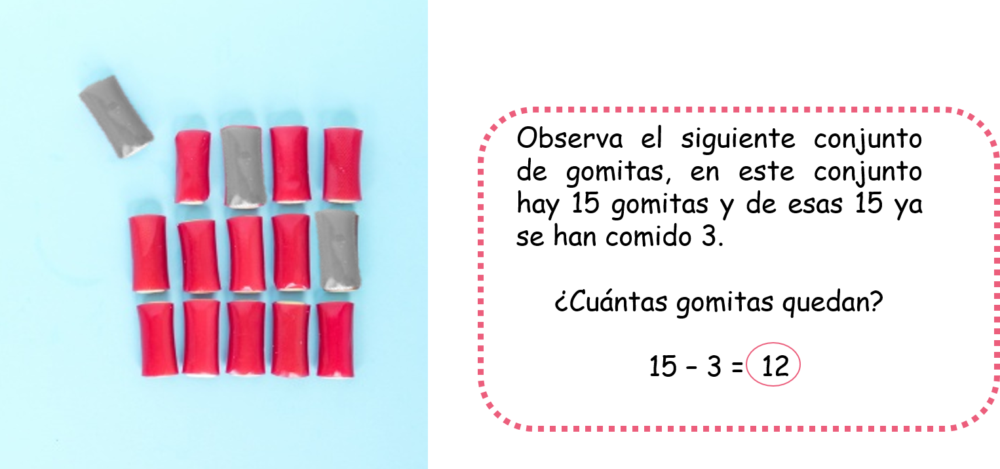Como puedes ver restamos las gomitas que ya se comieron.
Ahora, si fueramos a restar una cantidad mucho más grande sería más fácil hacerlo con una resta vertical pero podriamos encontrarnos con una situación en la cual a un número muy pequeño no le puedes restar un número más grande.
Observa:
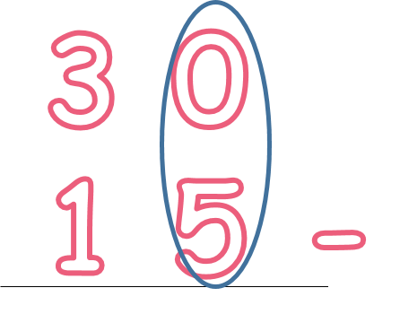Iniciamos restando las unidades y en estas casillas tenemos 0 - 5. A cero no le podemos quitar 5, es aquí donde aprenderemos a usar la resta prestando.
- ¿Qué vamos a aprender?
- Restas sin prestar
- Restas prestando
(1)Restas sin prestar
Para restar sin llevar vamos a seguir los siguientes pasos:
Vamos a restar:
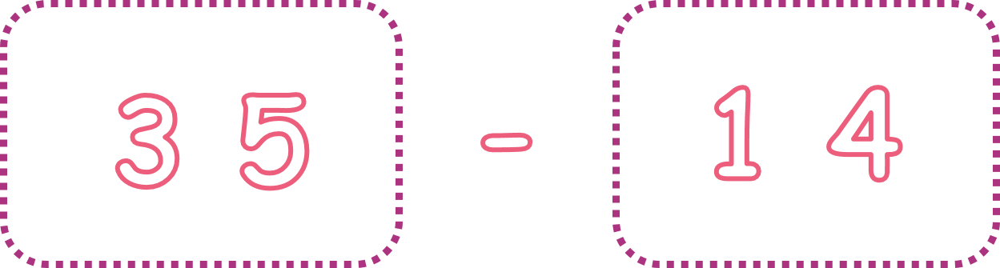A. Paso 1:
Ubicamos los números en las casillas correspondientes, es decir, en las unidades o en las decenas.
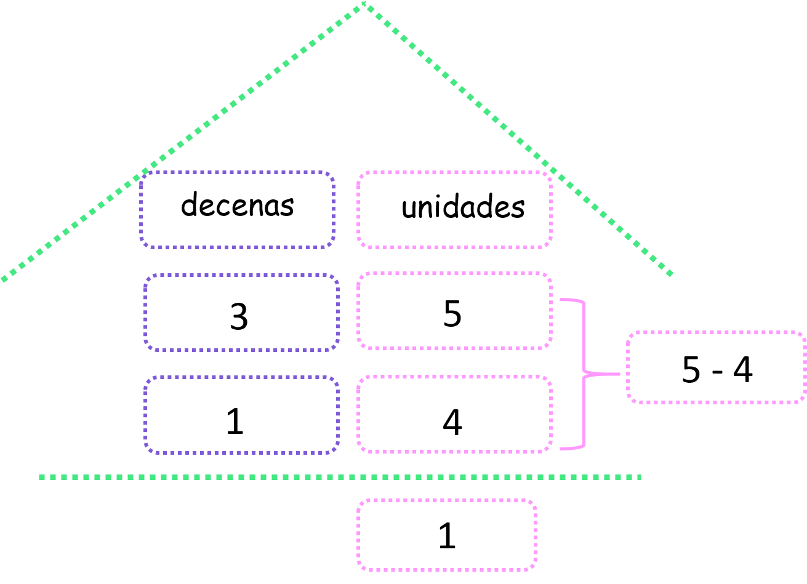Recuerda que con la casita de las decenas y las unidades puedes ubicar más fácilmente los números en la casilla que les corresponde.
B. Paso 2:
Vamos a restar solo los números que estén en la casilla de las unidades.
Observa:
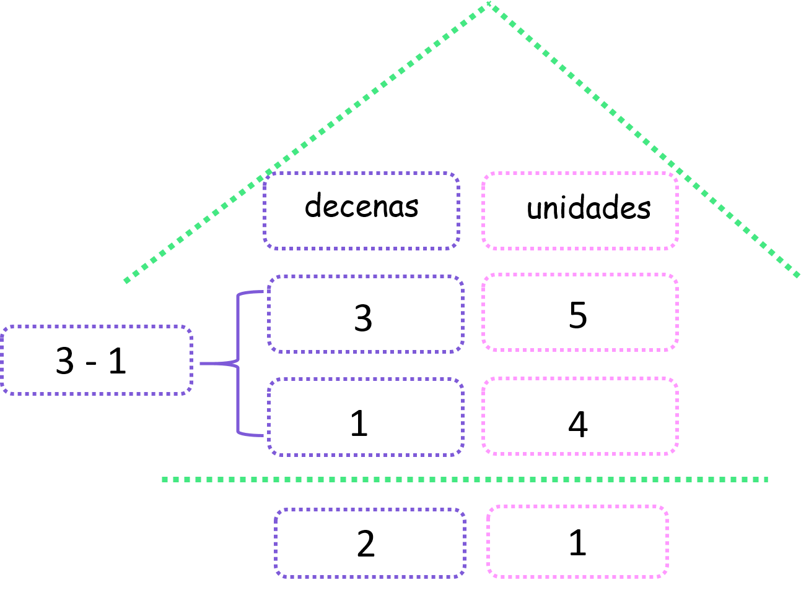C. Paso 3:
Restamos solo los números que están en las casillas de las decenas.
Observa:
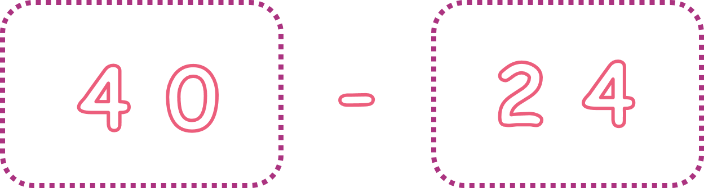Y listo! ya tienes resuelta la resta sin prestar.
(2)Restas prestando:
Para realizar restas prestando, vamos a seguir estos pasos:
Vamos a restar:
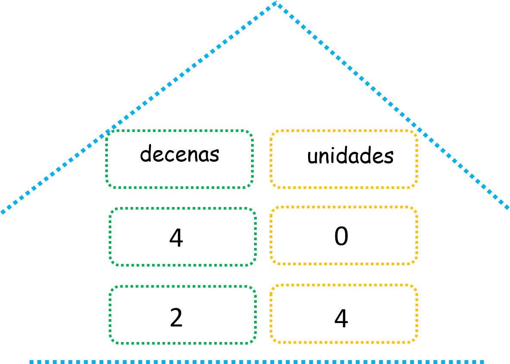A. Paso 1:
Ubicamos los números en las casillas correspondientes, es decir en las unidades o en las decenas.
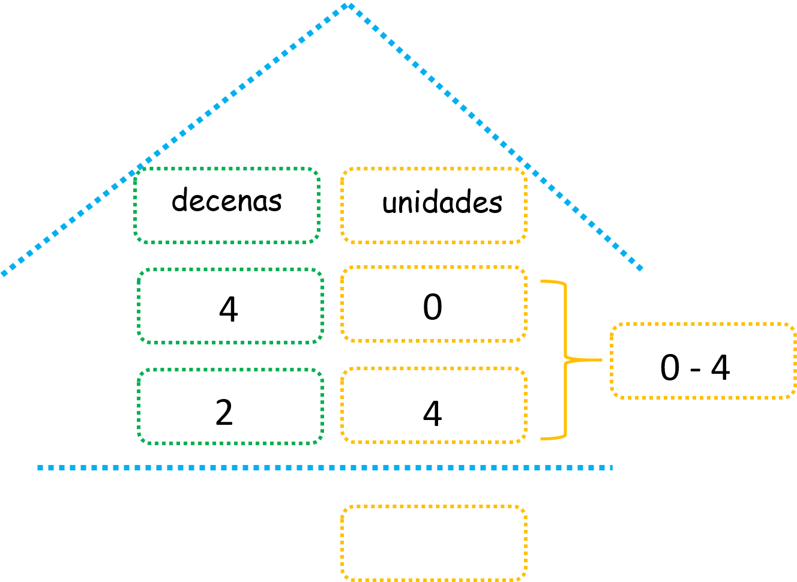B. Paso 2:
Restamos los números que se encuentran en las casillas de las unidades.
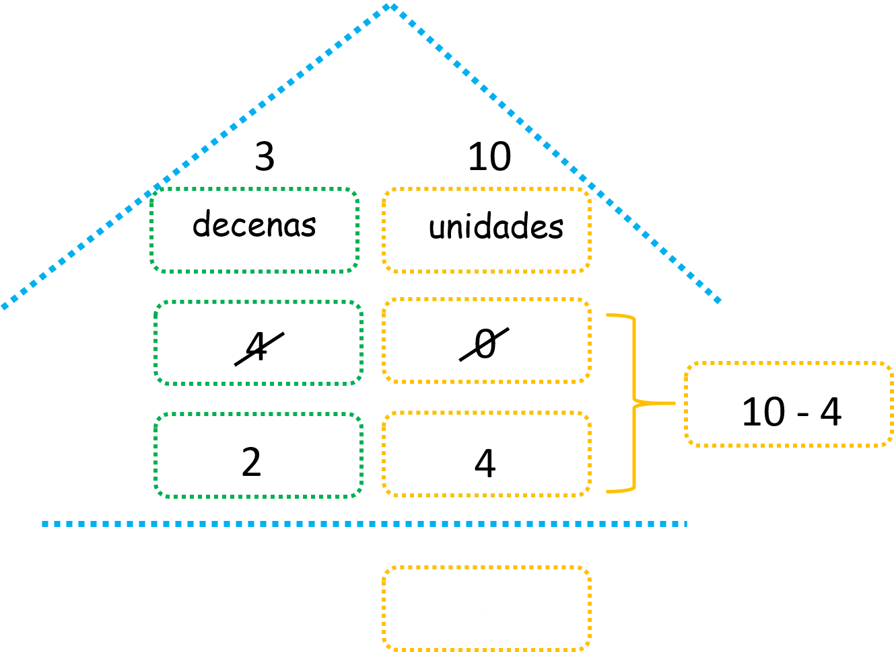Observa que a “0” no le podemos quitar “4”, por lo tanto el “0” tendrá que ir donde su vecino el 4 de las decenas para pedirle prestado una decena y así convertirse en 10.
Observa:
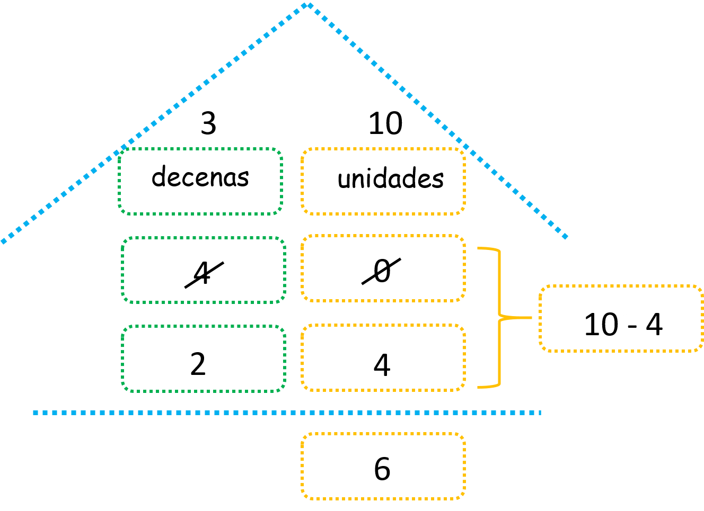Si observas muy bien 4 que es el vecino del cero le prestó una decena y por eso el cero se convirtió en 10, pero como el cuatro prestó una de sus decenas ahora se ha convertido en 3. Listo ahora ya podemos restar las unidades:
C. Paso 3:
ahora debemos restar los números que se encuentran en las casillas de las decenas. Ojo, no olvides que el 4 se convirtió en 3.
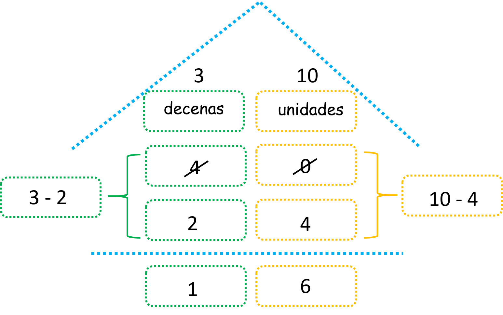Y listo! Ya resolvimos una resta prestando. ¿Has visto qué fácil es?
Material extra para trabajar el tema de restas prestando:
En el siguiente enlace podrás descargar un cuadernillo con fichas sobre restas prestando y sin prestar creado por Edufichas.com
En este enlace encontrarás un pdf con diferentes fichas de restas prestando y sin prestar creado por Orientacionandujar.es
Vídeos orientativos:
En el vídeo “Aprender a restar pidiendo prestado” de Croaccroac.com encontrarás una explicación sobre cómo restar prestando
En el vídeo “Restas con llevadas” de Matecitos.com encontrarás una explicación gráfica sobre cómo resolver restas prestando